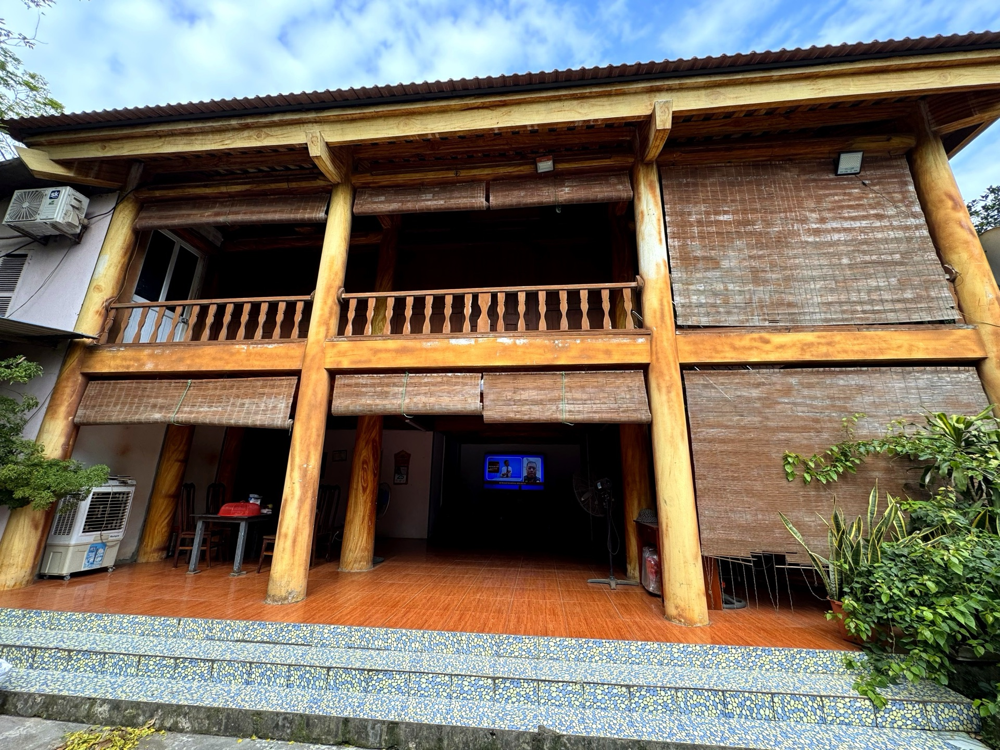
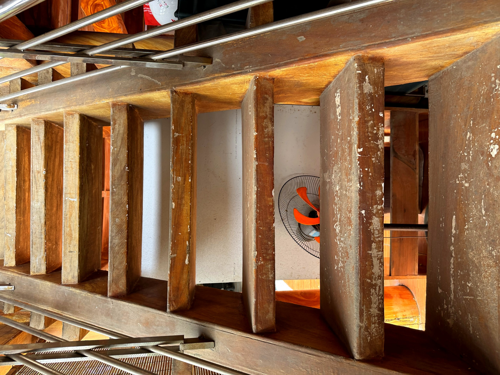

Loại hìnhTypeType
Homestay · lưu trúHomestay & AccommodationHomestay et hébergement

Ngay đối diện Nhà văn hoá thôn Đồi Dùng, ngôi nhà sàn của bà Bạch Thị Diển đứng giữa vườn cây như một dấu tích sống còn của kiến trúc ở truyền thống người Mường. Nhà sàn được dựng theo nếp cũ, sàn gỗ chắc chắn và khoảng không gian bên dưới thông thoáng đặc trưng của văn hoá cư trú miền đồi núi Bắc Bộ.
Bà Diển sẵn lòng tiếp đón khách tham quan, giải thích về kỹ thuật dựng nhà sàn, cách chọn gỗ, cách sắp xếp không gian sinh hoạt theo quan niệm của người Mường và những thay đổi trong đời sống bản làng qua nhiều thập kỷ.
Không gian nhà sàn giữa vườn cây tạo ra trải nghiệm yên tĩnh và chân thực, phù hợp với những du khách muốn lắng nghe, tìm hiểu và cảm nhận nét kiến trúc bản địa còn nguyên vẹn trong đời sống hàng ngày.
Directly opposite the Doi Dung village cultural house, Mrs. Bach Thi Dien's stilt house stands amidst the garden as a living testament to traditional Muong residential architecture. The stilt house is built in the old style, with sturdy wooden floors and the characteristic airy space underneath, typical of the Northern mountainous region's dwelling culture.
Ms. Diển warmly welcomes visitors, eager to explain the traditional techniques of building stilt houses, selecting wood, arranging living spaces according to Muong beliefs, and the changes in village life over decades.
The stilt house nestled amidst the garden offers a tranquil and authentic experience, perfect for visitors seeking to listen, learn, and feel the intact indigenous architecture woven into daily life.
Juste en face de la maison culturelle du village de Đồi Dùng, la maison sur pilotis de Mme Bạch Thị Diển se dresse au milieu du jardin comme un vestige vivant de l'architecture résidentielle traditionnelle Mường. La maison sur pilotis est construite à l'ancienne, avec des planchers en bois robustes et l'espace aéré caractéristique en dessous, typique de la culture de l'habitat des régions montagneuses du Nord.
Mme Diển accueille chaleureusement les visiteurs, désireuse d'expliquer les techniques traditionnelles de construction des maisons sur pilotis, le choix du bois, l'aménagement des espaces de vie selon les croyances Muong, et les changements dans la vie du village au fil des décennies.
La maison sur pilotis nichée au milieu du jardin offre une expérience tranquille et authentique, parfaite pour les visiteurs désireux d'écouter, d'apprendre et de ressentir l'architecture indigène intacte intégrée à la vie quotidienne.
| Tham quan nhà sànVisit Stilt HousesVisite des Maisons sur Pilotis | Giới thiệu kiến trúc, không gian sinh hoạt truyền thốngExplore traditional architecture and living spaces.Explorez l'architecture et les espaces de vie traditionnels. |
| Nghe kể về nhà sàn MườngDiscover the stories of Muong stilt housesDécouvrez les histoires des maisons sur pilotis Mường | Kỹ thuật dựng nhà, lựa gỗ, cách ở theo nếp MườngLearn traditional Muong house-building, wood selection, and living customs.Découvrez les techniques de construction de maisons Muong, le choix du bois et les coutumes de vie. |
| Chụp ảnh check-inPhoto OpportunitiesSpots photo | Nhà sàn giữa vườn cây, không gian mộc mạcStilt house amidst the orchard, rustic charmMaison sur pilotis au milieu du verger, un charme rustique |
| Nghỉ chân trên sàn gỗRelax on the traditional wooden floor.Détendez-vous sur le plancher en bois traditionnel. | Ngồi thư giãn, trò chuyện cùng chủ nhàRelax and chat with your host.Détendez-vous et échangez avec votre hôte. |
| Đón khách đoànGroup WelcomeAccueil de groupes | Phục vụ nhóm nhỏ theo lịch sắp xếpSmall groups served by prior arrangementPetits groupes servis sur rendez-vous |


Điểm trải nghiệm nhà sàn bà Diển hướng tới trở thành một điểm dừng chân văn hóa ngắn trong các tuyến tham quan thôn Đồi Dùng, nơi du khách được nhìn tận mắt và nghe tận tai về một loại hình kiến trúc cư trú đang ngày càng hiếm. Hoạt động du lịch được phát triển nhẹ nhàng, phù hợp với nhịp sống gia đình và góp phần nâng cao ý thức bảo tồn kiến trúc bản địa trong cộng đồng. Điểm đến Du lịch cộng đồng Mường Cốc, Xã Mỹ Đức – Thành phố Hà NộiMrs. Diển's Stilt House Experience aims to become a brief cultural stop on the Đồi Dùng village tour routes, where visitors can see and hear firsthand about a type of residential architecture that is becoming increasingly rare. Tourism activities are developed gently, fitting the family's rhythm of life and contributing to raising awareness of indigenous architectural preservation within the community. A Mường Cốc Community Tourism Destination, My Duc Commune – Hanoi City.Le point d'expérience de la maison sur pilotis de Mme Diển vise à devenir une courte halte culturelle sur les itinéraires de visite du village de Đồi Dùng, où les visiteurs peuvent voir et entendre de première main un type d'architecture résidentielle de plus en plus rare. Les activités touristiques sont développées en douceur, s'adaptant au rythme de vie de la famille et contribuant à sensibiliser à la préservation de l'architecture indigène au sein de la communauté. Une destination de tourisme communautaire de Mường Cốc, commune de My Duc – ville de Hanoi.